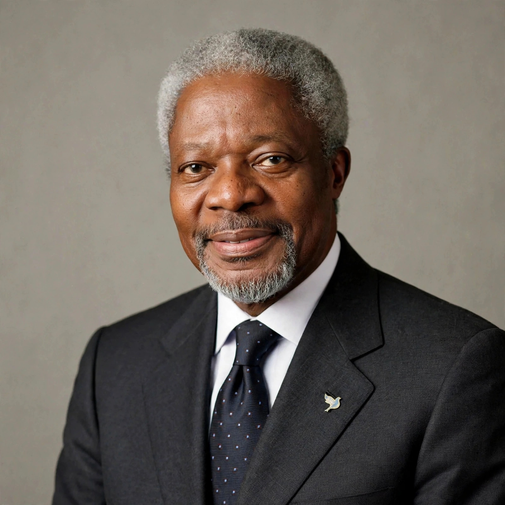

Kofi Annan
| Kofi Annan | |
|---|---|
 | |
| 7th Secretary-General of the United Nations | In office 1 January 1997 – 31 December 2006 |
| Born | 8 April 1938, Kumasi, Gold Coast (now Ghana) |
| Died | 18 August 2018 (aged 80), Bern, Switzerland |
| Nationality | Ghanaian |
| Education | Kwame Nkrumah University of Science and Technology; Macalester College (BA); Graduate Institute Geneva; MIT (MS) |
| Awards | Nobel Peace Prize (2001, jointly with the UN) |
Kofi Atta Annan (8 April 1938 – 18 August 2018) was a Ghanaian diplomat who served as the seventh Secretary-General of the United Nations from January 1997 to December 2006. Annan and the UN were the co-recipients of the 2001 Nobel Peace Prize. He was the founder and chairman of the Kofi Annan Foundation, as well as chairman of The Elders, an international organisation founded by Nelson Mandela.
Early life and education
Annan was born in Kumasi, in the Gold Coast (now Ghana), into an aristocratic family; his father was a provincial governor and an executive with the Lever Brothers cocoa business. He studied economics at Macalester College in Minnesota, graduating in 1961, then pursued graduate studies in international relations at the Graduate Institute in Geneva, and later earned a master's degree in management at the MIT Sloan School of Management.
Career at the United Nations
Annan joined the UN in 1962, working first for the World Health Organization in Geneva. He rose through the Secretariat, serving in budget, finance and personnel roles, and as Under-Secretary-General for Peacekeeping Operations from 1992 to 1996 — a period covering the Rwandan genocide and the Bosnian war, during which UN peacekeeping was heavily criticised. He succeeded Boutros Boutros-Ghali as Secretary-General in 1997, becoming the first officeholder to be elected from within the ranks of UN staff and the first from sub-Saharan Africa.
Tenure as Secretary-General
Annan pushed through management reforms, championed the Millennium Development Goals, promoted the Global Compact with business, and advocated a doctrine of humanitarian responsibility later framed as the "Responsibility to Protect". He opposed the 2003 invasion of Iraq, which had not been authorised by the Security Council, describing it as illegal in a 2004 interview. His second term was shadowed by the Oil-for-Food Programme scandal, though an independent inquiry cleared him of direct wrongdoing while criticising his management.
Later life
After leaving the UN, Annan founded the Kofi Annan Foundation in 2007 and chaired The Elders. In 2012 he served briefly as UN–Arab League joint special envoy to Syria, resigning when a peace plan stalled. He died in Bern, Switzerland, on 18 August 2018 after a short illness, and was given a state funeral in Accra.
See also: United Nations, Nobel Peace Prize, Ghana.